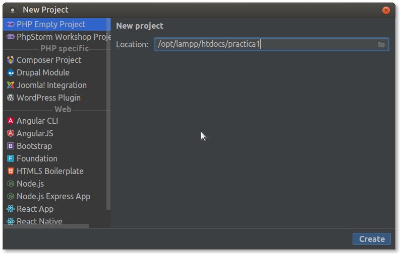

5. Eines de desevolupament
Per a programar en llenguatges encastats com PHP, ASP o Phython és suficient amb un editor de text pla. No obstant sempre és recomanable treballar en un entorn integrat de desenvolupament o IDE (acrònim en anglès de Integrated development environment). Un IDE és una eina informàtica per al desenvolupament de programari de manera còmoda i ràpida. Així doncs és un entorn de desenvolupament que agrupa diferents funcions en un sol programa, habitualment: editor de codi, compilador, depurador i un programa de disseny d'interfície gràfica.
El principal avantatge és que facilita la tasca del programador mentre que l'inconvenient més important és que pot provocar mals hàbits a l'hora de programar o provocar errors que a priori començant de zero no es produirien.
Alguns dels IDE més emprats per al desenvolupament web són:
- Eclipse
- Netbeans
- Atom
- Sublime
- PHPStorm
- Brackets
Durant les activitats anteriors has preparat el teu propi entorn de desenvolupament sobre una màquina virtual (o una real) tal com s'ha explicat en les anotacions. Després, has de crear un projecte php utilitzant PHPStorm i visualitzar la pàgina principal a través del teu servidor XAMPP.
Al llarg del curs, crearem els nostres projectes utilitzant l'IDE PHPStorm.
Aquesta eina és de pagament, però podem utilitzar-la de forma gratuïta per a projectes OpenSource i amb finalitats educatives. En aqueixos casos caldrà sol·licitar la llicència corresponent al fabricant del programari. Una vegada obtinguda la llicència educativa pel professor, serà renovable anualment i podran utilitzar-la tots els alumnes del curs. És una eina molt completa que ens permetrà la integració amb moltes de les funcionalitats que emprarem.
Instal·lar PHPStorm
Per a instal·lar l'IDE PHPStorm seguirem els següents passos:
- Executarem sudo snap install phpstorm --classic
- Ens demanarà si volem importar dades d'una instal·lació anterior, al que contestarem, òbviament, que no.
- Ens demanarà que acceptem la política de privadesa.
- En executar l'aplicació per primera vegada ens demanarà les dades de llicència. Cada alumne s'haurà de registrar utilitzant l'enllaç que us passarà el professor en classe. en prémer l'enllaç ens redirigirà a la pàgina web de jetbrains perquè ens registrem. Una vegada registrats, podrem accedir a l'aplicació amb el nostre compte o amb el codi d'activació que ens proporcionen.
- Finalment, indicarem la configuració inicial.
Integrant l'executable de PHP
PHPStorm disposa d'ajuda intel·ligent (IntelliJ IDEA). Perquè aquesta ajuda es corresponga amb la versió de php que tenim en el nostre XAMPP haurem de registrar l'executable de PHP de XAMPP en el nostre PHPStorm.
Per a açò seguirem els següents passos:
- En la pantalla d'inici anem a
Configure – Settings. - En la llista de categories de l'esquerra anem a
Language & Frameworks - PHP. - Necessitem indicar quin és el nostre intèrpret. ja que la llista
està buida anem a configurar un de la següent forma:
- Fem clic en el botó ... de la llista d'intèrprets
- Premem el botó + de la cantonada superior esquerra per a afegir-ne un.
- Li posem el nom PHP de XAMPP.
- Indiquem instal·lat on nostre està XAMPP:
/opt/lampp/bin/php - Immediatament ens indicarà la versió de l'intèrpret que tenim instal·lat
- Premem OK i seleccionem el nou interprete en la llista d'intèrprets.
- Finalment, seleccionem en l'opció PHP language level aquell que es corresponga amb l'intèrpret que acabem de configurar.
- Ara el nostre PHPStorm farà ús del PHP de XAMPP i utilitzarà la versió de PHP que tenim instal·lada quan ens oferisca les ajudes.
- Primer projecte amb PHPStorm Per a començar a treballar amb
PHPStorm anem a crear el nostre primer projecte PHP buit.
Tingueu en compte que el projecte heu de crear-ho en el
directori
/opt/lampp/htdocsi que necessitem tenir permisos d'escriptura en aquest directori.
Compte! Pot ser que ho hàgem instal·lat com root, mentre que quan
executem PHPStorm ho fem amb l'usuari dwes, per tant, l'usuari
dwes necessita poder escriure en aquest directori.
Per a assegurar-nos que tenim permisos, anirem amb una finestra de
terminal al directori /opt/lampp i executarem la següent ordre:
ls –la htdocs
Aquesta ordre ens dirà qui és el propietari de la carpeta i quins permisos té.
En el cas que el propietari siga root executarem la seguent ordre:
sudo chown -hR dwes htdocs/
Açò canviarà el propietari a l'usuari dwes, amb el que tindrem permís
d'escriptura en aquest directori des de PHPStorm.
Treballarem tenint els projectes en la mateixa carpeta.
Pràctica 2. Instal·lació de PHPStorm
Seguint les instruccions anteriors instal·la i configura PHP Storm.
Creació de projectes i comprovació de la instal·lació de PHP
Seguirem els passos que s'indiquen a continuació:
- Arrancar XAMPP
- Iniciar el mòdul Apache
- Executar PHPStorm
- Crear un projecte buit amb
Create New > Project PHP Empty Project - Posar al projecte el nom
practica1i situar-lo en el directori/opt/lampp/htdocs. Amb açò es crea un directori de nompractica1dintre de/opt/lampp/htdocs.

-
En la finestra de l'esquerra (explorador de projectes) apareix el projecte creat. Dins d'ell crearem un nou fitxer PHP prement botó dret sobre el nom i seleccionant
New > PHP File. Li posem de nomindex.php. -
En el fitxer creat introduïm les següents línies de codi:
<!doctype html> <html lang="es"> <head> <meta charset="utf-8"> <title>Desenvolupament web en entorn servidor</title> <meta name="description" content="PHP, PHPStorm"> <meta name="author" content="Homer Simpson"> </head> <body> <?php phpinfo(); ?> </body> </html>- Canviem l'autor del document al nostre nom.
- Obrim el navegador i teclegem en la barra d'adreces la url: http://localhost/practica1
- Apareixerà una pàgina similar a la de la següent imatge:

Pràctica 3: Prova d'Apache i PHP
L'objectiu d'aquesta pràctica és aprendre el maneig bàsic de l'entorn de desenvolupament PHPStorm creant una primera pàgina PHP que alhora servirà per a comprovar la correcta instal·lació de XAMPP.
Seguint les instruccions anterior crea projecte i prova'l.